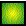
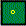
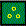
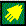
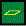
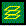
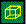
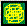
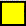

Итак мы рассмотрели восемь художественных приемов или, лучше сказать, восемь каналов, по которым поэтический текст несет информацию. Это образ, формула, фонетика, повторяемость, стилистика, смысл, динамика, концепция. Есть еще два канала, которые мы не рассмотрели - риторика и ассоциации.
Риторика - структура фразы, оживляющая текст (восклицания, вопросы, противопоставления, умозаключения и т.п.)
Ассоциации - то что не сказано в тексте, но всплывает в уме читателя из-за схожести элементов текста с общеизвестными элементами жизни и культуры (скрытые цитаты)
Эти десять каналов прямо связаны с десятью уровнями сознания
| Уровень | Пиктограмма | Канал |
| 0 |  | смысл |
| 1 |  | фонетика |
| 2 |  | ритм, рифмовка, рифма - повторяемость) |
| 3 | образ | |
| 4 |  | формула |
| 5 |  | динамика |
| 6 |  | риторика |
| 7 |  | ассоциации |
| 8 |  | концепция |
| 9 |  | стилистика |
Подробности этой теории можно узнать здесь